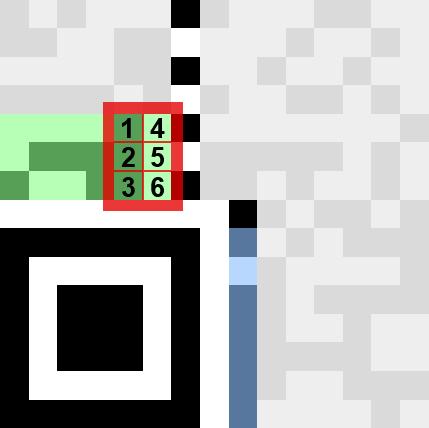
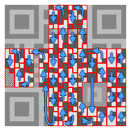
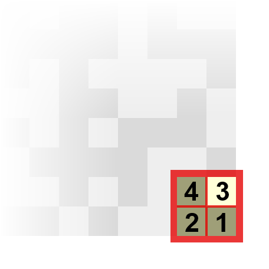
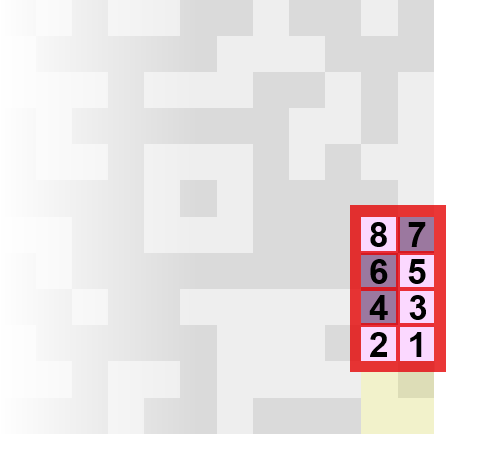

Hoe Lees Je QR-Codes
Interactieve digitale handleiding door Britt en Michiel
Stap 1: Hoe groot is de QR-Code?
QR-Code Versions
Er bestaan veel schillende groottes QR-Codes, deze worden ook wel "versions" genoemd. Version 1 is de kleinste, 21 bij 21 vakjes groot, en de grootste is version 40, met 177 bij 177 vakjes.
Kies een version:
Vaste patronen
De drie grote vierkanten in de hoeken van de QR-Code zijn de "Finder Patterns", door deze patronen herkent de scanner de QR-Code.
De Finder Patterns worden met elkaar verbonden door een stippellijn, deze lijnen zijn de "Timing Patterns", deze helpen de scanner de positie van de andere vakjes te herkennen.
Bij alle versions behalve de aller kleinste zie je ook een kleiner vierkant van 5 bij 5 vakjes in de hoek rechts onder, dit is zijn "Alignment Patterns", deze zorgen ervoor dat de scanner de code beter kan uitlijnen. Bij grotere codes komen er meerdere Alignment Patterns voor.
Welke version is het?
Om er achter te komen welke version je hebt kan je natuurlijk gewoon vakjes gaan tellen, maar somige versions zijn makkelijker te herkennen. Één manier waaraan je de versions kan herkennen is het aantal Alignment Patterns die er in de code zitten, version 1 is de enige zonder Alignment Patterns, versions 2 t/m 6 hebben er precies één en dan moet je toch echt de vakjes gaan tellen om het version nummer te weten, maar hogere versions (vanaf 7) hebben meerdere Alignment Patterns. Als je vakjes moet gaan tellen dan is de makkelijkste manier om de lengte van de Timing Patterns te tellen want hier wisselt zwart en wit mooi af.
Version Info (alleen bij versie 7 en hoger)
Bij versions 7 en hoger hebben ze de version in de code zelf staan (in de hiernaast groen gekleurde vakjes). Het versie nummer staat in binair genoteerd over zes verschillende vakjes, zie het plaatje hiernaast. In het plaatje hiernaast zie je dat de getallen 1, 2 en 3 op een donker vakje staan en de andere nummers op een licht vakje, alle donkere vakjes zijn 1'en en alle lichte vakjes zijn 0's, dus hieruit komt het binaire getal 000111, wat 7 is in decimaal, dus weet je dat de QR-Code uit het plaatje van version 7 is.
Overigens zijn er twee groene gebieden in iedere QR-Code van version 7 of hoger, maar deze twee gebieden zijn hetzelfde maar dan gedraait en gespiegeld.
Vul hiernaast de zes rechter vakjes van de Version Info in als je een QR-Code van versie 7 of hoger hebt. (als je meer dan 1 Alignment Pattern ziet heb je versie 7 of hoger)
Er staat nu de code voor Version 7.
Klik op de vakjes aan de rechter kant om ze aan te passen.
De grijze vakjes die je hier links van de 6 vakjes met het version nummer ziet staan, zijn error correctie vakjes, deze zorgen er voor dat de scanner zeker weet dat hij de version info goed gescanned heeft. Als de scanner ziet dat hij de version info niet goed heeft gescanned kan hij alsnog het versie nummer berekenen met deze vakjes. Elke versie heeft een vaste bijbehoorende combinatie van error correctie vakjes die met een wiskundige formule berekend zijn.
Stap 2: Welke mask word er gebruikt?
Data Masks
Je hebt bij de vorige stap gezien dat een QR-Code een aantal vaste elementen heeft, maar de data die we willen lezen zit in het gebied dat in de QR-Code van de vorige stap grijs gekleurd is, dat grijze gebied bevat de data en ook een hoop vakjes die worden gebruikt voor error correctie.
Om te voorkomen dat er grote witte of zwarte vlakken in een QR-Code ontstaan zit er een "mask" over het gebied met de data en de error correctie heen. Deze mask (hiernaast weergegeven) is een patroon dat sommige vakjes omkeert, dus alle vakjes die hiernaast zwart zijn gekleurd zijn in de QR-Code het tegenovergestelde van wat ze eigenlijk horen te zijn.
Kies een mask:
Welke mask wordt er gebruikt?
In totaal zijn er 8 verschillende patronen, genummerd 0 t/m 7, die de mask kan gebruiken, welke er gebruikt wordt kan je aflezen uit de QR-Code.
Formating Info
Het nummer van welke mask er wordt gebruikt staat in binair genoteerd over drie specifieke vakjes in het blauwe gebied, dit blauwe gebied is het formating gebied. Dit gebied bestaat uit twee vakjes die de hoeveelheid error correctie aangeven en daarna de drie vakjes die aangeven welke mask er wordt gebruikt, de overige vakjes zijn error correctie van deze eerste vijf vakjes.
Net zoals de version info staat de format info ook twee keer in de QR-Code, zodat de scanner zeker weet dat hij deze goed gescanned heeft, want deze gebieden zijn cruciaal voor het lezen van de QR-Code.
Vul de eerste vijf vakjes van de Format Info hiernaast in om er achter te komen welke mask er gebruikt wordt.
Er staat nu de code voor:
- Error correctie level: M (15%)
- Mask nummer: 0
Klik op de vakjes links onder in het stuk van de code hiernaast om ze aan te passen.
Stap 3: Hoeveel data blocks zijn er?
Data Blocks
Een belangrijk feit waar je rekening mee moet houden als je een QR-Code probeert te lezen is dat de data soms in meerdere data blocks verdeelt kan zijn. Als dit zo is, dan staat de data niet meer op de logische volgorde zoals je dat zou verwachten, maar worden de datablokken steeds afgewisseld waardoor je eerst een byte van het eerste datablok hebt, dan een byte van het tweede datablok, enzovoort.
Het aantal datablokken en de lengte van ieder blok hangt af van QR-Code versie en van de hoeveelheid error correctie. Hieronder kan je zien hoeveel datablokken je hebt:
Version 1
- L: 1 x 19
- M: 1 x 16
- Q: 1 x 13
- H: 1 x 9
Version 2
- L: 1 x 34
- M: 1 x 28
- Q: 1 x 22
- H: 1 x 16
Version 3
- L: 1 x 55
- M: 1 x 44
- Q: 2 x 17
- H: 2 x 13
Version 4
- L: 1 x 80
- M: 2 x 32
- Q: 2 x 24
- H: 4 x 9
Version 5
- L: 1 x 108
- M: 2 x 43
- Q: 2 x 15 + 2 x 16
- H: 2 x 11 + 2 x 12
Version 6
- L: 2 x 68
- M: 4 x 27
- Q: 4 x 19
- H: 4 x 15
Version 7
- L: 2 x 78
- M: 4 x 31
- Q: 2 x 14 + 4 x 15
- H: 4 x 13 + 1 x 14
Version 8
- L: 2 x 97
- M: 2 x 38 + 2 x 39
- Q: 4 x 18 + 2 x 19
- H: 4 x 14 + 2 x 15
Version 9
- L: 2 x 116
- M: 3 x 36 + 2 x 37
- Q: 4 x 16 + 4 x 17
- H: 4 x 12 + 4 x 13
Version 10
- L: 2 x 68 + 2 x 69
- M: 4 x 43 + 1 x 44
- Q: 6 x 19 + 2 x 20
- H: 6 x 15 + 2 x 16
Version 11
- L: 4 x 81
- M: 1 x 50 + 4 x 51
- Q: 4 x 22 + 4 x 23
- H: 3 x 12 + 8 x 13
Version 12
- L: 2 x 92 + 2 x 93
- M: 6 x 36 + 2 x 37
- Q: 4 x 20 + 6 x 21
- H: 7 x 14 + 4 x 15
Version 13
- L: 7 x 107
- M: 8 x 37 + 1 x 38
- Q: 8 x 20 + 4 x 21
- H: 12 x 11 + 4 x 12
Jij hebt Version 7 en Error Correctie Level M, dus jij hebt 4 datablokken van 31 bytes lang.
Data Volgorde
De data in een QR-Code staat volgens een aantal regels verdeelt over de QR-Code. De data staat verdeelt over kolommen van 2 vakjes breed, het begint rechts onder in de QR-Code en gaat daar naar boven, wanneer je boven aan bent gekomen ga je in de kollom daarnaast weer naar beneden (zie het plaatje hiernaast).
De data is verdeeld in bytes, elk gebied hiernaast met een rode rand er omheen is een byte die bestaat uit acht vakjes, elk vakje is één bit van een byte. De bits (de losse enen en nullen) moet je in de bytes altijd van rechts naar links lezen, en vertikaal moet je de richting van de data (zie de pijlen hiernaast) volgen.
Meerdere Data Blokken

Zoals eerder gezegd moet je als je meerdere data blokken hebt er op letten dat de bytes niet op volgorde staan. Hiernaast hebben we een voorbeeld plaatje staan van een QR-Code van Version 7 en error correctie level L, hij heeft dus 2 datablokken van 78 bytes lang. De eerste byte staat zoals altijd rechts onder in de QR-Code, voor de tweede byte staat eerst de 79'ste byte, dit is de eerste byte van het tweede datablok, en als je zo verder kijkt zie je dat op deze manier de twee datablokken steeds om en om staan.
Stel dat je meer dan twee datablokken hebt dan worden op een soort gelijke manier door elkaar gezet, je krijgt eerst een byte van het eerste datablok, dan een byte van het tweede datablok, gevolgd door een byte van het derde datablok, enzovoort totdat je van alle datablokken de eerste byte hebt gehad, dan ga je verder met de tweede byte van ieder datablok.
Stel dat je in tabel hierboven hebt gezien dat je datablokken van verschillende lengtes hebt, bijvoorbeeld 2 van 15 byte en 2 van 16 byte, dan staan ze alsnog op dezelfde manier afgewisseld in de QR-Code, zoals bijvoorbeeld met 4 datablokken als je twee keer 2 datablokken hebt. Het enige wat anders is, is dat de eerste paar blokken één byte korter zijn.
Stap 4: Welk datatype wordt er gebruikt?
Datatypes
Nu we weten waar we onze data kunnen vinden kunnen we eindelijk gaan kijken naar wat er in de data staat. Er zijn een aantal verschillende datatypes die gebruikt kunnen worden in een QR-Code, om te weten welk datatype er gebruikt wordt moet je kijken naar de eerste 4 bits van de eerste byte rechts onder in de QR-Code.
Dit zijn de verschillende datatypes met bijbehoorende code:
- 0001: Numeric Mode
- 0010: Alphanumeric Mode
- 0100: Byte Mode
- 1000: Kanji Mode
- 0111: ECI Mode
Numeric Mode
Met Numeric Mode bestaat de data uit alleen cijfers, dit heeft als voordeel dat er maar 10 verschillende mogelijke tekens zijn (nummer 0 t/m 9) waardoor deze modus het grootste aantal tekens in een QR-Code kan opslaan.
Alphanumeric Mode
Deze modus kan niet alleen getallen gebruiken, maar ook hoofdletters en een aantal andere tekens zoals een spatie of een plusteken, maar bijvoorbeeld niet een vraagteken. De Alphanumeric Mode neemt door de extra mogelijke tekens iets meer ruimte in per teken dan de Numeric Mode.
Byte Mode
Byte Mode is de meest gebruikte data type in QR-Codes, omdat deze modus bijna alle tekens kan opslaan, maar hierdoor neemt hij wel meer ruimte per teken in. Byte Mode maakt gebruik van ASCII (en ook UTF-8) codes, ASCII bevat nummers, hoofd- en kleine letters en alle leestekens. ASCII en UTF-8 zijn de meest voorkomende manieren om text op te slaan in bytes.
Kanji Mode
Kanji Mode wordt gebruikt voor Japanse Kanji tekens. Deze is nog minder ruimte efficiënt dan de Byte Mode omdat er meer Kanji tekens zijn dan ASCII-tekens. Deze Japanse tekens hebben hun eigen QR-Code modus omdat QR-Codes oorspronkelijk uit Japan komen.
ECI Mode
Als laatste heb je nog ECI Mode, deze wordt gebruikt wanneer je een andere teken set wil gebruiken dan deze hierboven, zo kan je met ECI Mode bijvoorbeeld Arabische of Chinese tekens opslaan in je QR-Code.
Welk datatype wordt er gebruikt?
Omdat de 4 vakjes met het datatype nummer in het datagebied staan moet je eerst de mask van de vakjes afhalen voordat je kan weten welk datatype er gebruikt wordt. Als je in het gedeelte hierboven de juiste versie nummer hebt ingevuld en de formating info hebt in gevuld zoals hij op jouw QR-Code staat, dan kan je nu hieronder de 4 vakjes waaruit je het gebruikte datatype kan aflezen invullen:
Met Mask
Mask
Zonder Mask
Klik op de vakjes in het linker vierkant om ze aan te passen.
We zullen in de komende stappen ervan uitgaan dat je de Byte Modus gebruikt, omdat je deze het vaakst tegen komt, maar het principe is voor alle datatype ongeveer hetzelfde.
Stap 5: Hoe lang is de data?
!!! MOET NOG AANGEPAST WORDEN !!!
!!! MOET NOG AANGEPAST WORDEN !!!
!!! MOET NOG AANGEPAST WORDEN !!!
Character Count Indicator
Na het datatype is het eerst volgende stuk dat in de data van de QR-Code staat de Character Count Indicator, deze geeft aan uit hoeveel bytes je tekst in de QR-Code bestaat. Elke byte is meestal één teken, met uitzondering van sommige speciale tekens, zoals letters met accenten erop, die kunnen soms meerdere bytes gebruiken. Met de Byte Mode is de Character Count Indicator zelf 1 of 2 bytes lang, 1 byte bij versies 1 t/m 9, 2 bytes bij versies 10 t/m 40, dit betekend dat de Character Count Indicator uit 8 of 16 vakjes bestaat.
Jij hebt Version 1 en je gebruikt Byte Mode, dus is de Character Count Indicator 8 bits lang.
(de versie en het datatype zijn overgenomen uit de stappen hiervoor)
!!! MOET NOG AANGEPAST WORDEN !!!
!!! MOET NOG AANGEPAST WORDEN !!!
!!! MOET NOG AANGEPAST WORDEN !!!
!!! MOET NOG AANGEPAST WORDEN !!!
!!! MOET NOG AANGEPAST WORDEN !!!
!!! MOET NOG AANGEPAST WORDEN !!!
!!! MOET NOG AANGEPAST WORDEN !!!
!!! MOET NOG AANGEPAST WORDEN !!!
!!! MOET NOG AANGEPAST WORDEN !!!
Met Mask
Mask
Zonder Mask
Klik op de vakjes in het linker rechthoek om ze aan te passen.
!!! MOET NOG AANGEPAST WORDEN !!!
!!! MOET NOG AANGEPAST WORDEN !!!
!!! MOET NOG AANGEPAST WORDEN !!!
Stap 6: Wat staat er nou eigenlijk?
Dit wordt nog verder aangevuld
Bronnenlijst:
- http://www.thonky.com/qr-code-tutorial/
- ISO/IEC 18004 (official QR-Code Paper)
- http://www.esponce.com/resources/about-qr-codes